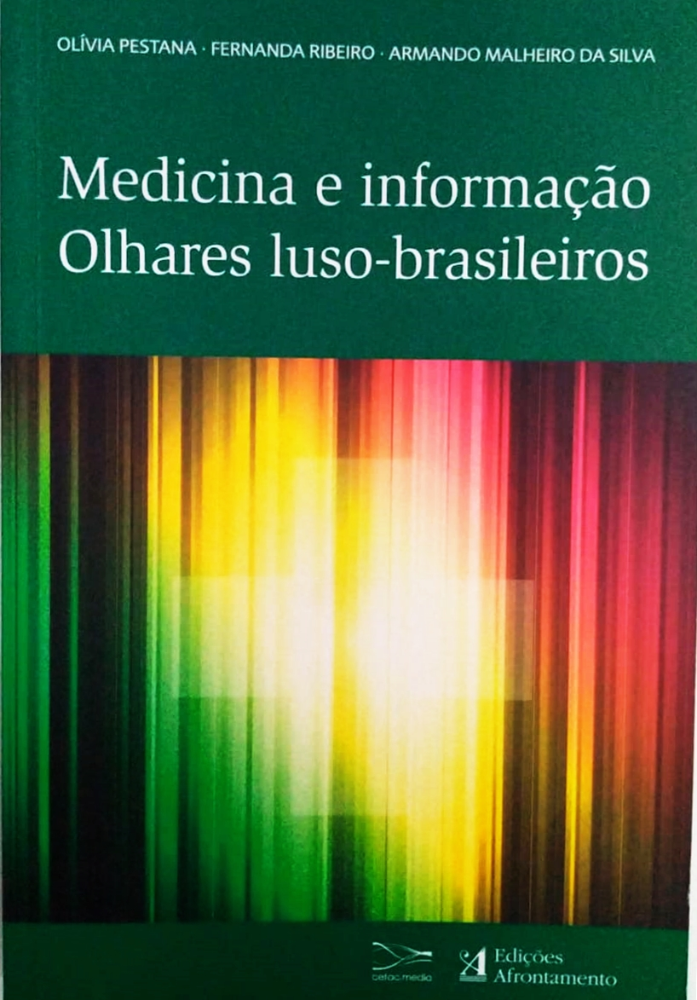
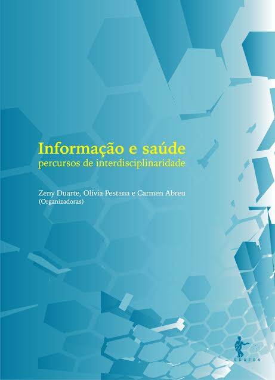
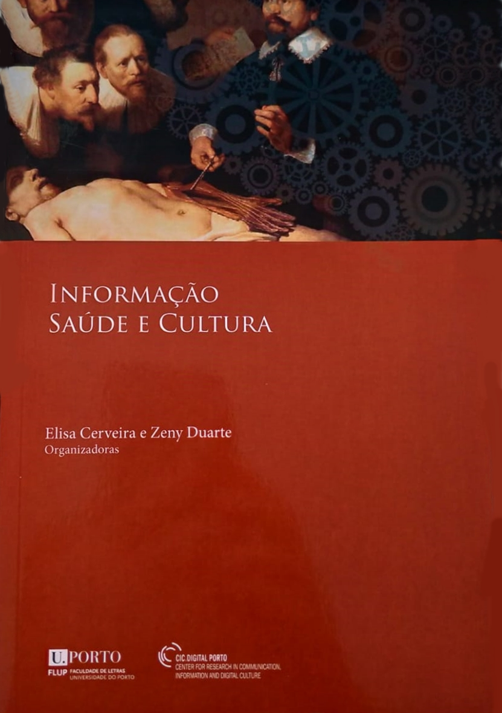
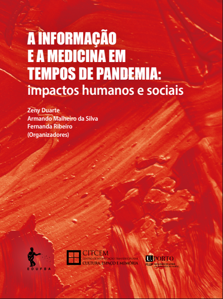
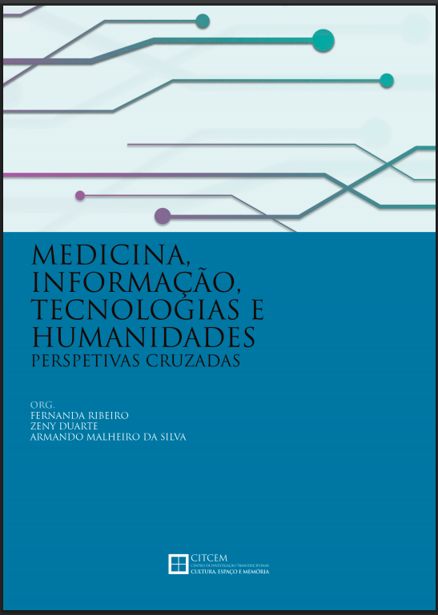
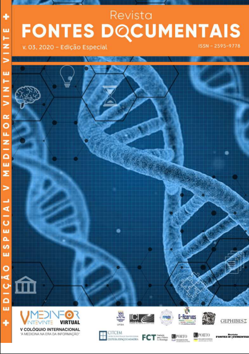
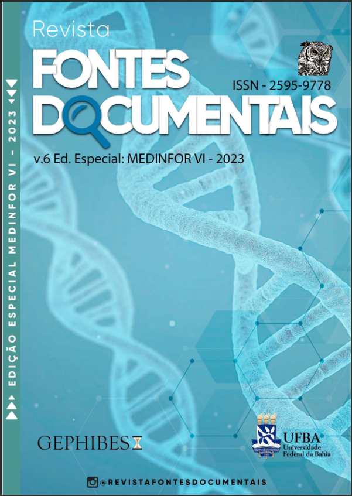

Produções – Livros e Revistas
Produções: Livros das edições anteriores do Colóquio Internacional "A Medicina na Era da Informação" (MEDINFOR), com publicação em capítulos das conferências, palestras e comunicações apresentadas.
Livros das Edições Anteriores




A Informação e a Medicina em Tempos de Pandemia: impactos humanos e sociais
V MEDINFOR – 2020
⬇ Baixar sumário

Medicina, Informação, Tecnologias e Humanidades: Perspectivas Cruzadas
VI MEDINFOR – 2023
⬇ Baixar sumário
Revistas das Edições Anteriores
Revistas das edições anteriores do Colóquio Internacional "A Medicina na Era da Informação" (MEDINFOR), com publicação dos resumos expandidos das conferências, palestras e comunicações apresentadas.

